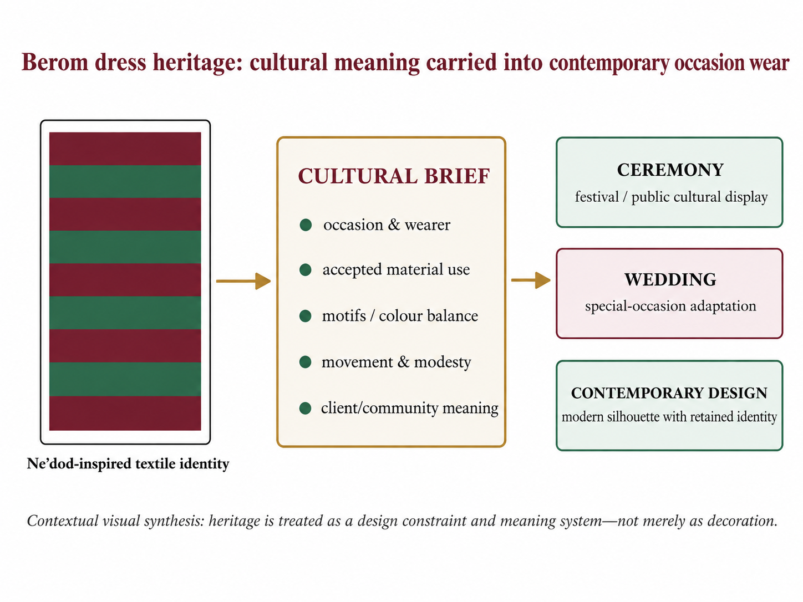
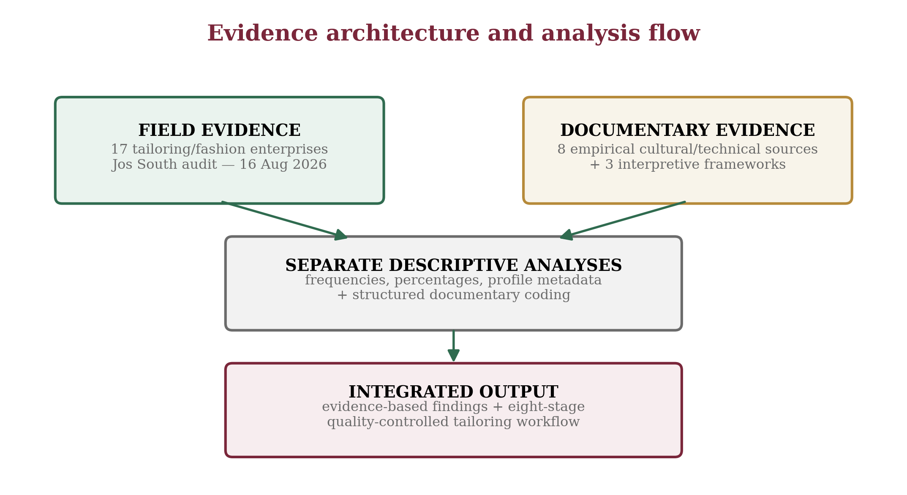
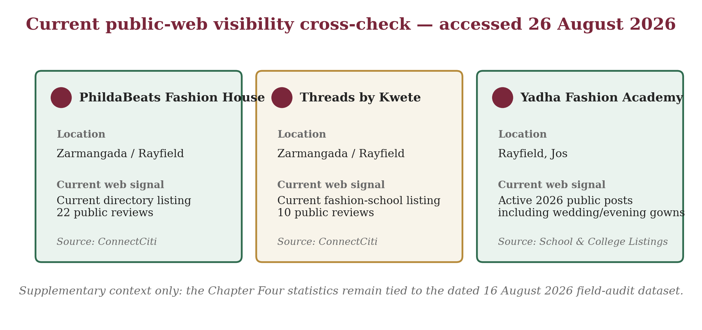
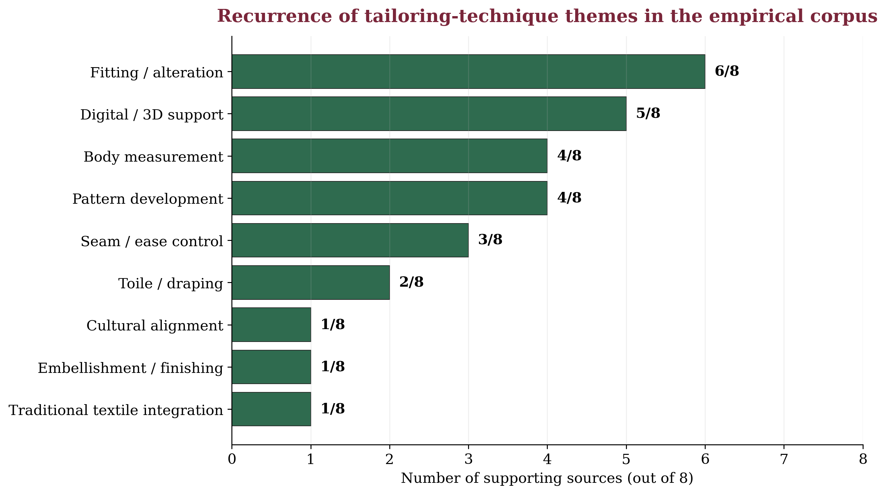
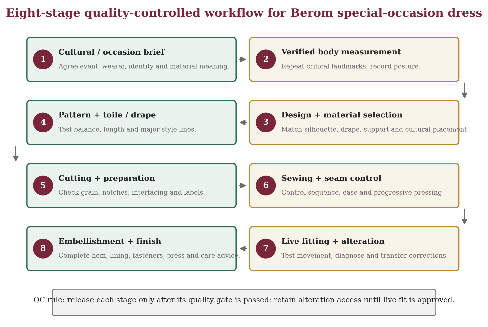

Production-approved public reading copy. DOI pending registration. This page is not a substitute for any later Crossref record.
Tailoring Techniques for Special-Occasion Dresses in Berom Land: A Case Study of Jos South Local Government Area, Plateau State, Nigeria
Abstract
Background: Berom special-occasion dress sits at the intersection of indigenous textile identity and made-to-measure garment engineering. Purpose: This study examined culturally responsive tailoring techniques for special-occasion dresses in Berom land, using Jos South Local Government Area, Plateau State, Nigeria, as a case study. Methods: A convergent mixed-method field-audit and documentary case-study design combined a criterion-based audit of 17 tailoring/fashion enterprises conducted on 16 August 2026 with structured coding of eight directly relevant empirical cultural and apparel sources. Frequencies, percentages, mean, median and structured content coding were used; the field and documentary evidence streams were kept analytically distinct. Results: Thirteen of the 17 enterprises (76.5%) were categorized as fashion designers. Ten enterprises (58.8%) displayed public-profile ratings; among rated listings the mean was 4.99/5 across 61 visible reviews, with a median of four reviews. Fitting/alteration was the most recurrent documentary technique theme (6/8), followed by digital/3D support (5/8); body measurement and pattern development each appeared in four sources. The integrated evidence supported an eight-stage quality-controlled workflow: cultural/occasion briefing, verified body measurement, design and material selection, pattern and toile/drape development, cutting/preparation, sewing and seam control, live movement-based fitting, and final embellishment/finishing. Conclusion: High-quality Berom special-occasion dress depends on treating cultural consultation and technical garment production as one controlled process. Digital tools can support measurement and visualization, but they should strengthen rather than replace skilled pattern work, live fitting and culturally informed decision-making.
1. Introduction
Clothing is simultaneously a technical product and a cultural statement. In special-occasion dress, the garment must accommodate the wearer’s dimensions, posture, movement and comfort while also communicating identity, celebration and belonging. This dual demand is especially important in Berom land, where traditional attire participates in public cultural display and contemporary adaptation. The functional-expressive-aesthetic (FEA) framework of Lamb and Kallal (1992) is therefore relevant because it treats successful apparel as an integration of practical performance, communicative meaning and visual quality.
Within Jos South, Berom dress heritage is represented by Ne’dod and by the visible use of distinctive maroon-and-green cultural cloth in ceremonial contexts. Jugu, Gaddiun and Nimzing (2023) link Ne’dod production in Shen Village to cultural identity, ceremony, livelihood and intergenerational knowledge and document its adaptation into contemporary products, including wedding gowns. Current festival documentation likewise shows traditional dress operating within a living public culture rather than as a static museum object (Solate, 2025).
The technical problem is equally demanding. A culturally meaningful dress can fail if body measurements are inaccurate, pattern balance is weak, seam ease is poorly distributed, or fitting is treated as a final approval rather than an iterative diagnostic process. Nigerian couture literature emphasizes design, fabric selection, pattern making, draping, cutting, sewing and finishing as a connected production sequence (Nwamara, 2025), while recent fit research demonstrates the value of movement-based assessment, body-shape-sensitive pattern correction and standardized body measurement (Casciani & Bertolini, 2025; Choi & Choi, 2025; Yang & Baytar, 2024).
1.1 Problem statement and study contribution
The practical gap is the absence of a clearly integrated, locally grounded workflow that connects Berom cultural briefing with measurement, pattern development, toile or drape testing, sewing, fitting, embellishment and final quality control. Local ethnographic literature is strong on textile heritage, whereas contemporary apparel studies provide detailed technical evidence without being written for the Berom context. This study bridges the two evidence traditions and adds a dated field profile of tailoring/fashion enterprises in selected Jos South corridors.
1.2 Aim and objectives
The study aimed to examine tailoring techniques suitable for producing culturally responsive and technically sound special-occasion dresses in Berom land, using Jos South Local Government Area as the case study. Specifically, it sought to:
- document the cultural and special-occasion context in which Berom dress and Ne’dod are relevant in Jos South;
- identify the principal tailoring and couture techniques applicable to special-occasion dress production;
- examine empirical evidence on measurement, garment fit, pattern correction, seam ease and finishing as determinants of dress quality;
- describe the field profile of tailoring and fashion enterprises in selected Jos South corridors, including primary categories and public-profile visibility; and
- develop an evidence-based, culturally responsive and quality-controlled workflow for Berom special-occasion dress production.
2. Literature Review and Analytical Framework
2.1 Functional, expressive and quality-control perspectives
Three complementary perspectives organize the analysis. First, the FEA Consumer Needs Model distinguishes functional needs such as fit, movement and comfort; expressive needs such as identity and group membership; and aesthetic needs such as line, colour, texture, proportion and overall appearance (Lamb & Kallal, 1992). Second, Social Identity Theory explains how visible cultural resources, including dress, can communicate group belonging and continuity (Tajfel & Turner, 1979). Third, Deming’s (1986) quality perspective emphasizes defect prevention and process control rather than dependence on final inspection alone. Together, these perspectives position cultural consultation, technical tailoring and stage-by-stage verification as interdependent requirements.

Figure 1. Conceptual framework for culturally responsive special-occasion tailoring. Source: Researcher’s visual synthesis based on Lamb and Kallal (1992), Tajfel and Turner (1979), Deming (1986), Berom cultural evidence and reviewed garment-production studies.
2.2 Berom dress heritage and contemporary special-occasion adaptation
Berom dress heritage provides the cultural foundation for the study. Jugu et al. (2023) show that Ne’dod production in Shen Village is tied to cultural memory and artisan knowledge, while contemporary applications include wedding gowns, outing garments and accessories. Official and contemporary festival accounts situate distinctive attire within Nzem Berom cultural display. This creates a design requirement: adaptation must be negotiated with the wearer and, where appropriate, cultural custodians rather than treating traditional textile merely as a decorative surface.

Figure 2. Contextual visual montage of Berom ceremonial dress, festival presentation and special-occasion adaptation. The visual is retained from the source project as contextual illustration and is not treated as primary analytical evidence. Festival context is supported by Jugu et al. (2023) and Solate (2025).

Figure 3. Visual pathway from Berom dress heritage to contemporary special-occasion adaptation. Source: Researcher’s visual synthesis based on Jugu et al. (2023), Jos South cultural information and Solate (2025).
2.3 Measurement, fit, pattern correction and prototyping
Accurate measurement is the bridge between an intended design and the actual wearer. Casciani and Bertolini (2025) found greater reliability in 3D scanning within their pilot comparison of measurement technologies, while also noting limits in some smartphone-based approaches. For conventional tailoring, the practical implication is standardization: anatomical landmarks should be identified consistently and critical measurements should be repeated before pattern cutting.
Fit is broader than circumference. Yang and Baytar (2024) observed that professional fit assessment incorporates visual, tactile, comfort and movement feedback across multiple postures. Choi and Choi (2025) demonstrated that body-type-sensitive pattern correction can improve ease, balance and seam alignment, while Galada and Baytar (2025) frame fit diagnosis as the interpretation of visible signs such as draglines, folds, wrinkles, gaping and hiking and their translation into two-dimensional pattern corrections.

Figure 4. Movement-based fit-assessment protocol for occasion dresses. Source: Researcher’s redrawing and application of movement evidence reported by Yang and Baytar (2024).

Figure 5. Diagnostic loop from visible fit defects to pattern correction and toile validation. Source: Researcher’s visual synthesis based on Galada and Baytar (2025) and Choi and Choi (2025).
2.4 Construction control, seam ease and finishing
Pattern development, draping and toile prototyping allow the tailor to test balance and style lines before cutting costly or limited cultural material. Nwamara (2025) identifies pattern making and draping as core couture operations. Lee, Park and Lee (2023) further show that ease amount and seam geometry affect three-dimensional seam form, reinforcing the need for deliberate ease distribution around sleeve caps, curved seams, waist joins and shaped panels. Finishing operations - including lining, hems, fasteners, pressing and final inspection - should therefore confirm quality already created through earlier stages rather than attempt to rescue late-stage defects.
3. Materials and Methods
3.1 Study design and setting
A convergent mixed-method field-audit and documentary case-study design was used. The field component documented enterprise-level observations from tailoring/fashion businesses in selected Jos South corridors. The documentary component extracted qualitative and countable technique evidence from Berom cultural and contemporary apparel studies. The two evidence streams were analysed separately and integrated only at interpretation and workflow-development stages.
The geographical setting was Jos South Local Government Area, Plateau State, Nigeria. Field observations covered the Bukuru/Bukuru Express/Anguldi, Rayfield/Zarmangada/Fwavei and Rantiya corridors. The cultural setting was Berom land as represented within Jos South, including Shen Village and the Ne’dod literature.

Figure 6. Evidence architecture and analysis flow. Source: Researcher’s design.
3.2 Sample, instruments and data collection
Table 1. Evidence sample and provenance. Source: Research design and evidence audit.
A purposive, criterion-based field sample of 17 tailoring/fashion enterprises was retained. Eligible enterprises operated in a selected corridor, offered a tailoring/fashion-related service and represented a unique business after name and location checks. The documentary sample comprised eight directly relevant empirical sources: Jugu et al. (2023), Nwamara (2025), Yang and Baytar (2024), Choi and Choi (2025), Casciani and Bertolini (2025), Lee et al. (2023), Galada and Baytar (2025), and Wang et al. (2023).
The Tailoring Enterprise Audit Schedule recorded business identifier, location label, primary category and, where available, public-profile rating and review count. The Documentary Technique Extraction Matrix recorded source context, method, technique evidence and relevance. Field data were collected on 16 August 2026. Missing rating/review values were left blank rather than estimated, and duplicate, unrelated or out-of-area entries were excluded.
3.3 Validity, analysis and ethics
Content validity was strengthened by aligning every audit and extraction field with the study objectives. Triangulation compared local ethnography, Nigeria-specific couture literature and recent international apparel studies. Arithmetic results were reconciled against the raw 17-record audit, and documentary codes were retained only when a source directly described, measured or operationalized the technique.
Field data were summarized with frequencies and percentages. For rated enterprise profiles, mean rating, total reviews, mean reviews and median reviews were calculated. Documentary evidence was analysed through structured content coding across the eight-source corpus. No inferential test was applied because the field sample was criterion-based and descriptive.
The study collected enterprise-level observations and public commercial profile information. No private customer identity, personal message, financial record or sensitive respondent attribute was reported. Published cultural and technical evidence was credited to its original sources, and field, profile and documentary evidence were kept analytically distinct.
4. Results
4.1 Distribution and primary business category
Table 2. Distribution of audited enterprises by location cluster. Source: Tailoring enterprise field audit, 16 August 2026.

Figure 7. Distribution of audited tailoring/fashion enterprises by location cluster (n = 17). Source: Tailoring enterprise field audit, 16 August 2026.
Table 3. Distribution by primary business category. Source: Tailoring enterprise field audit, 16 August 2026.

Figure 8. Audited tailoring/fashion enterprises by primary business category (n = 17). Source: Tailoring enterprise field audit, 16 August 2026.
The audited enterprises were distributed equally across the Bukuru/Anguldi and Rayfield/Zarmangada/Fwavei clusters (47.1% each), with one enterprise in Rantiya. Thirteen enterprises (76.5%) were categorized primarily as fashion designers, compared with two tailors and one each classified as custom tailor and clothing store. The category distribution describes how audited businesses presented their primary service orientation; it does not measure comparative skill levels.
4.2 Public-profile visibility
Table 4. Public-profile rating/review visibility. Source: Tailoring enterprise field audit and public-profile metadata, 16 August 2026.

Figure 9. Public-profile rating visibility and review-summary indicators in the audited sample. Interpretation: profile metadata describe public visibility, not population-wide customer satisfaction.
Ten of the 17 audited enterprises had a visible public-profile rating. The mean rating among rated listings was 4.99/5 across 61 visible reviews; the median review count was four. These values should be interpreted cautiously because ratings were unavailable for seven enterprises and several visible review counts were small.
The source project also documented a supplementary public-web spot check on 26 August 2026 for selected audited enterprises. It was explicitly treated as contextual corroboration and did not replace, recode or extend the dated 16 August field-audit dataset. Because public directory counts can change, the figure should be read as a dated visibility snapshot rather than a stable performance measure.

Figure 10. Supplementary current public-web visibility cross-check for selected audited enterprises, accessed 26 August 2026. Sources recorded in the project: ConnectCiti and School & College Listings. This visual is contextual and is not a new analytical dataset.
4.3 Documentary technique recurrence
Table 5. Documentary coding of tailoring techniques across the eight-source empirical corpus. Note: counts show recurrence within the corpus, not prevalence among all tailors.

Figure 11. Recurrence of tailoring-technique themes across the eight-source documentary corpus. Source: Documentary Technique Extraction Matrix.
Fitting and alteration was the most recurrent theme, appearing in six of eight sources. Digital/3D support appeared in five, while body measurement and pattern development each appeared in four. The pattern indicates that successful special-occasion tailoring is a multi-stage activity in which fit depends on upstream measurement and pattern decisions and downstream seam control and finishing.
4.4 Fit and quality evidence
Table 6. Selected empirical evidence on fit and quality. Source: Researcher’s synthesis of cited empirical studies.
The evidence defines occasion-dress quality as a chain of controllable variables: measurement approximates the body; pattern work distributes those dimensions; seam and ease decisions transform flat pieces into volume; and fitting verifies the relationship under posture and movement. A professional fitting session should therefore be diagnostic, examining neckline contact, shoulder position, bust/waist/hip balance, seam direction, hem level, draglines, gaping, arm mobility, sitting comfort and closure stress.
4.5 Integrated quality-controlled workflow

Figure 12. Recommended eight-stage quality-controlled workflow for Berom special-occasion dress. Source: Researcher’s synthesis of field and documentary evidence.
Table 7. Recommended quality-control gates for special-occasion dress. Source: Researcher’s synthesis of field and documentary evidence.
The workflow is deliberately usable in a conventional tailoring workshop. Digital body measurement or 3D simulation can be added where available, but the minimum viable system remains based on manual measurement, paper pattern or drape development, toile testing, controlled sewing and a disciplined live-fitting procedure.
5. Discussion
5.1 Cultural responsiveness as a production requirement
The study confirms that Berom dress heritage is not merely an aesthetic reference but an expressive design requirement. Ne’dod is associated with identity, ceremony and livelihood (Jugu et al., 2023), and Nzem Berom demonstrates the continuing public visibility of distinctive attire (Solate, 2025). This supports the expressive dimension of the FEA model and explains why cultural consultation should precede pattern cutting. The practical design question is not whether every garment should appear 'traditional', but how much cultural material, motif, colour or symbolism the client intends the garment to carry.
5.2 Fit as an iterative diagnostic process
Fitting/alteration was the most recurrent theme in the documentary corpus. This agrees with Yang and Baytar (2024), who show that movement and sensory feedback are integral to fit assessment, and with Choi and Choi (2025), whose optimized patterns improved fit after systematic correction. Galada and Baytar (2025) further show why fit correction should be taught as a diagnostic skill. For special-occasion dress, this means that a static mirror check is insufficient; the garment must be tested under movement and event-relevant postures.
5.3 Process quality and the role of digital tools
The combined evidence supports a process-control interpretation of tailoring quality. Deming’s (1986) logic is applicable because errors accumulate across stages: inaccurate measurement compromises pattern work, poor pattern balance creates fit defects, uncontrolled ease distorts seams, and premature embellishment can obstruct alteration. Nwamara’s (2025) recommendation for task instruction sheets therefore has direct relevance to diploma-level workshops.
Digital measurement, simulation and human-product interaction can support personalization (Casciani & Bertolini, 2025; Wang et al., 2023), but they do not remove the need for skilled judgement. The appropriate conclusion for Jos South is hybrid: use digital tools where they improve measurement, visualization, documentation and promotion, while retaining physical fitting, pattern competence and cultural consultation as core controls.
5.4 Enterprise context
The field audit confirms a visible tailoring/fashion enterprise base across multiple Jos South corridors. The dominance of the label 'fashion designer' suggests that many audited businesses present themselves as broader design enterprises rather than as sewing-only shops. Public-profile ratings were visible for 58.8% of the audited sample, indicating that digital discoverability is already part of the enterprise environment. The ratings, however, are not a representative customer-satisfaction measure and should not be generalized beyond their dated public-listing context.
6. Practical and Educational Implications
- Every Berom special-occasion commission should begin with a written cultural and occasion brief before fabric commitment or cutting.
- Critical body measurements should be standardized and repeated; posture and movement requirements should be recorded alongside circumference values.
- Complex bodices, fitted sleeves, sculptural drapes and projects using limited cultural cloth should be tested through a toile, muslin or low-cost prototype.
- Live fitting should include sitting, walking, arm elevation and event-relevant postures, with visible defects diagnosed and transferred back to the pattern where possible.
- Fashion training should assess measurement, pattern accuracy, fit diagnosis, seam control and finishing as separate process milestones rather than relying only on the final garment.
- Task instruction sheets and stage-by-stage quality gates should be incorporated into tailoring workshops to reduce rework and improve traceability.
- Digital measurement, 3D visualization and online business presentation should be introduced progressively as supports to competent manual tailoring and responsible client communication.
- Berom textile knowledge should be documented in collaboration with artisans and cultural custodians so that contemporary adaptation retains cultural meaning as well as visual identity.
7. Limitations
The field component was a purposive, criterion-based case-study audit of 17 enterprises rather than a population census, so the findings do not estimate the prevalence of tailoring categories across all of Jos South. Public ratings were unavailable for seven enterprises and visible review counts were small for several rated profiles; they are therefore indicators of public visibility, not population-level customer satisfaction. The documentary technique counts show recurrence within an eight-source corpus and should not be interpreted as prevalence among practitioners. The study did not conduct a garment-manufacturing experiment, wearer trial, destructive textile test or causal comparison of tailoring methods. Future work should use defined sampling frames, consent-based wearer studies, prototype testing and repeated seasonal or production observations.
8. Conclusion and Recommendations
Berom special-occasion dress quality is best understood as the outcome of a controlled sequence rather than a single tailoring technique. Cultural meaning establishes the expressive brief; verified measurement and pattern correction establish fit; seam and ease control establish stable construction; live fitting verifies comfort, balance and movement; and finishing completes the aesthetic and functional standard. The study’s eight-stage workflow converts these linked requirements into a practical system suitable for diploma-level training and small-enterprise tailoring.
The evidence also supports a balanced approach to technology. Digital measurement and 3D simulation can improve personalization and record-keeping, but they should strengthen rather than replace manual skill, live fitting and cultural knowledge. Tailors, training institutions and cultural stakeholders should therefore prioritize written design briefs, repeat measurements, prototyping, diagnostic fitting, task sheets, stage-by-stage quality checks and collaborative documentation of Berom textile heritage.
Declarations
Table 8. Publication declarations and editorial metadata status.
References
Casciani, D., & Bertolini, M. (2025). Towards a sustainable on-demand fashion industry: The impact of digital body measurement technologies. Discover Sustainability, 6, Article 478. https://doi.org/10.1007/s43621-025-01269-8
Choi, J., & Choi, H. E. (2025). Development of a body type optimized pattern library based on fit adjustment frameworks. Fashion and Textiles, 12, Article 30. https://doi.org/10.1186/s40691-025-00437-8
ConnectCiti. (2026). Businesses in Plateau - PhildaBeats Fashion House. Retrieved August 26, 2026, from https://connectciti.com/region/plateau
ConnectCiti. (2026). Fashion school in Nigeria - Threads by Kwete. Retrieved August 26, 2026, from https://connectciti.com/category/fashion-school
Deming, W. E. (1986). Out of the crisis. Massachusetts Institute of Technology, Center for Advanced Engineering Study.
Galada, A., & Baytar, F. (2025). Developing an instrument with simulations to measure 3D to 2D fit correction skills in fashion design. Fashion and Textiles, 12, Article 11. https://doi.org/10.1186/s40691-025-00417-y
Jos South Local Government Area. (n.d.). About Jos South LGA. Retrieved August 16, 2026, from https://jossouthlga.pl.gov.ng/about/
Jos South Local Government Area. (n.d.). Berom art and culture museum. Retrieved August 16, 2026, from https://jossouthlga.pl.gov.ng/ova_por/berom-art-and-culture-museum/
Jugu, P. S., Gaddiun, J. J., & Nimzing, V. S. (2023). An ethnographic study of the production of the traditional Berom attire (Ne'dod) in Shen Village, Jos South Local Government Area, Plateau State, Nigeria. https://doi.org/10.13140/RG.2.2.25316.14725
Lamb, J. M., & Kallal, M. J. (1992). A conceptual framework for apparel design. Clothing and Textiles Research Journal, 10(2), 42-47. https://doi.org/10.1177/0887302X9201000207
Lee, H., Park, S., & Lee, Y. (2023). Quantitative analysis of 3D seam shape according to easing conditions for efficient sewing using muslin. Fashion and Textiles, 10, Article 44. https://doi.org/10.1186/s40691-023-00364-6
Nwamara, N. A. (2025). Method of producing couture garment in Nigeria: Issues and improvement strategy. International Journal of Development Strategies in Humanities, Management and Social Sciences, 15(1), 286-291. https://doi.org/10.48028/iiprds/ijdshmss.v15.i1.20
School & College Listings. (2026). Yadha Fashion Academy, Rayfield, Jos. Retrieved August 26, 2026, from https://www.schoolandcollegelistings.com/NG/Jos/108599585068988/Yadha-Fashion-Academy
Solate, E. (2025, August 11). Nzem Berom Festival 2025: Celebrating the spirit and resilience of Berom women. Medium.
Tajfel, H., & Turner, J. C. (1979). An integrative theory of intergroup conflict. In W. G. Austin & S. Worchel (Eds.), The social psychology of intergroup relations (pp. 33-47). Brooks/Cole.
Wang, Z., Tao, X., Zeng, X., Xing, Y., Xu, Z., & Bruniaux, P. (2023). Design of customized garments towards sustainable fashion using 3D digital simulation and machine learning-supported human-product interactions. International Journal of Computational Intelligence Systems, 16, Article 16. https://doi.org/10.1007/s44196-023-00189-7
Yang, Y., & Baytar, F. (2024). Fit models’ roles in identifying fit issues in the apparel technical design process and implications for improving 3D virtual fitting. Fashion and Textiles, 11, Article 32. https://doi.org/10.1186/s40691-024-00398-4
Publication Record
Table 1
| Article | Volume/Issue | Published | ISSN | DOI |
|---|---|---|---|---|
| e003 | 1(1) | July 2026 | Pending assignment | Pending registration |
Table 2
| Evidence stream | Sample | Selection basis | Role in analysis |
|---|---|---|---|
| Tailoring enterprise field audit | 17 enterprises | Tailoring/fashion service; selected Jos South corridor; unique business | Describe location, primary category and public-profile metadata |
| Documentary empirical corpus | 8 sources | Direct relevance to Berom culture, couture, measurement, fit, pattern, seam/ease or digital customization | Code technique recurrence and compare empirical findings |
| Interpretive frameworks | 3 works | Direct applicability to apparel needs, identity and process quality | Interpret integrated workflow; not counted as empirical technique observations |
Table 3
| Location cluster | n | % |
|---|---|---|
| Bukuru / Bukuru Express / Anguldi | 8 | 47.1 |
| Rayfield / Zarmangada / Fwavei | 8 | 47.1 |
| Rantiya | 1 | 5.9 |
| Total | 17 | 100.0 |
Table 4
| Primary category | n | % |
|---|---|---|
| Tailor | 2 | 11.8 |
| Fashion designer | 13 | 76.5 |
| Custom tailor | 1 | 5.9 |
| Clothing store | 1 | 5.9 |
| Total | 17 | 100.0 |
Table 5
| Measure | Result | Interpretive note |
|---|---|---|
| Enterprises with visible public rating | 10 of 17 | 58.8% of audited sample |
| Mean rating among rated enterprises | 4.99 / 5 | Rated listings only |
| Total reviews across rated enterprises | 61 | Descriptive visibility indicator |
| Mean reviews per rated enterprise | 6.1 | Rated listings only |
| Median reviews per rated enterprise | 4.0 | Rated listings only |
Table 6
| Technique theme | Supporting source codes | Count |
|---|---|---|
| Cultural/occasion alignment | S1 | 1/8 |
| Body measurement/anthropometry | S2, S4, S5, S8 | 4/8 |
| Pattern development/adjustment | S2, S4, S7, S8 | 4/8 |
| Toile/draping/prototyping | S2, S4 | 2/8 |
| Seam and ease control | S2, S3, S6 | 3/8 |
| Fitting and alteration | S2, S3, S4, S5, S7, S8 | 6/8 |
| Embellishment and finishing | S2 | 1/8 |
| Traditional textile integration | S1 | 1/8 |
| Digital/3D support | S3, S4, S5, S7, S8 | 5/8 |
Table 7
| Quality variable | Source | Evidence | Application |
|---|---|---|---|
| Measurement accuracy | Casciani & Bertolini (2025) | 3D scanning showed stronger measurement reliability in the pilot; some smartphone tools were less complete or precise. | Standardize landmarks; repeat critical measurements; treat apps as aids. |
| Movement-based fitting | Yang & Baytar (2024) | Fit models assessed comfort, touch and fit while standing and moving through postures. | Include sitting, walking, arm movement and event-relevant postures. |
| Body-shape pattern correction | Choi & Choi (2025) | Body-type-optimized patterns improved ease, balance and seam alignment after expert and muslin validation. | Correct for posture/proportion, not circumference alone. |
| Seam ease | Lee et al. (2023) | Ease amount and seam geometry altered 3D seam shape and deformation. | Distribute ease deliberately in curved and contoured areas. |
| Fit-correction skill | Galada & Baytar (2025) | Fit diagnosis requires reading draglines, wrinkles, folds and gaping and selecting 2D corrections. | Diagnose the visible sign and its source before alteration. |
| Nigerian couture process | Nwamara (2025) | Design, fabric choice, pattern, draping, sewing and finishing operate as a connected sequence. | Use an order of operations and quality checkpoints. |
Table 8
| Stage | Core task | Quality gate |
|---|---|---|
| 1. Cultural/occasion brief | Event, wearer identity, traditional material, modesty and movement needs | Written design brief agreed before fabric commitment |
| 2. Verified body measurement | Standard landmarks; posture notes; critical measures repeated | Measurement sheet complete and verified |
| 3. Design + material selection | Sketch, silhouette, fabric behaviour, textile placement, lining/support | Design technically compatible with material |
| 4. Pattern + toile/drape | Draft/adapt pattern; test complex sections in inexpensive material | Balance, length and major style lines confirmed |
| 5. Cutting + preparation | Grain/pattern alignment; notches; interfacing and stabilizing tests | Pieces complete, labelled and protected |
| 6. Sewing + seam control | Order of operations; stitch tests; seam allowance; ease; progressive pressing | Assembly stable and alteration access retained |
| 7. Live fitting + alteration | Static and movement checks; diagnose draglines, gaping and tension | Fit approved for comfort, balance and movement |
| 8. Embellishment + finish | Surface work, hem, lining, fasteners, final press and clean | Final quality checklist passed; care advice prepared |
Table 9
| Declaration | Statement |
|---|---|
| Ethics and provenance | The study reported enterprise-level observations and public commercial identifiers relevant to academic analysis. No private customer identity, personal message, financial record or sensitive respondent attribute was reported. Field, public-profile and documentary evidence were kept analytically distinct. |
| Funding | Not stated in the source project; the author should complete this field before final journal release. |
| Competing interests | Not stated in the source project; the author should complete this field before final journal release. |
| Data availability | The raw enterprise audit and documentary coding matrices are retained with the underlying project record. Any sharing should preserve the study’s provenance and privacy limits. |
| Author contribution | To be completed after author identity and authorship metadata are confirmed. |
| Peer-review record | To be inserted from the CHIATECH JOURNAL editorial record; no peer-review or acceptance status was fabricated in this publication-ready layout. |
| Copyright and licence | To be completed by the journal at publication in accordance with the applicable CHIATECH JOURNAL open-access licence. |
Table 10
| How to cite: [Author surname, initials]. (2026). Tailoring techniques for special-occasion dresses in Berom land: A case study of Jos South Local Government Area, Plateau State, Nigeria. CHIATECH JOURNAL. Volume/issue and article number pending editorial assignment. DOI pending. Article: Pending editorial assignment · Publication: August 2026 · ISSN: Pending assignment · DOI: Pending registration Publisher: CHIA TECH SOLUTIONS AND RESOURCES LIMITED · RC 1839865 · Nigeria Journal contact: chiatechlibrary@gmail.com |
|---|